przyroda
23.12.2022
Justyna Cielecka
Najpiękniejsze szlaki w Tatrach. Wojtek Dąb poleca 5 ulubionych tatrzańskich tras
Najwyższe polskie góry robią wrażenie o każdej porze roku. W których miejscach szczególnie dobrze wyglądają na zdjęciach? Najpiękniejsze szlaki w Tatrach rekomenduje Wojtek Dąb, wielokrotnie nagradzany fotograf związany z serwisem Geogazeta.
Na wycieczkę w poszukiwaniu najpiękniejszych szlaków w Tatrach wybieramy się z Wojtkiem Dębe,. Niewielu ludzi w naszym kraju tak dobrze zna polskie góry jak fotograf Geogazety z Zakopanego. Choć na swoich zdjęciach Wojtek Dąb przybliża nam najdalsze zakątki świata, najlepiej czuje się w fotografii górskiej. Jak sam mówi: „Góry nigdy mi się nie znudzą, ponieważ za każdym razem są inne". Tatry zna jak własną kieszeń i doskonale wie, gdzie i kiedy ustawić się z aparatem, by oddać pełnię uroku najwyższych polskich gór.
Oto najpiękniejsze szlaki w Tatrach wybrane i sfotografowane przez Wojtka Dęba.
Kasprowy Wierch – Kopa Kondracka
Czerwony szlak na Kasprowy Wierch od strony Kopy Kondrackiej przebiega na granicy ze Słowacją. Szlak jest urozmaicony widokowo. Można tu oglądać zarówno skały, jak i zieleń. Czasami pojawiają się kozice. Co jednak szczególnie przyciąga wędrowców z aparatami fotograficznymi, to niezapomniany widok na Halę Kondratową – szczególnie urokliwy jesienią, kiedy dosłownie zapiera dech w piersiach. Warto wiedzieć, że na Hali Kondratowej znajduje się schronisko – najmniejsze w Polskich tatrach, choć wciąż bardzo przytulne.
– Na Kopie Kondrackiej byłem setki razy. Nigdy nie napotkałem tu takich samych warunków – opowiada Wojtek Dąb.
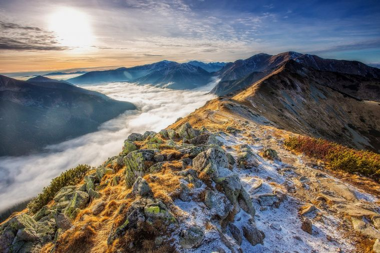 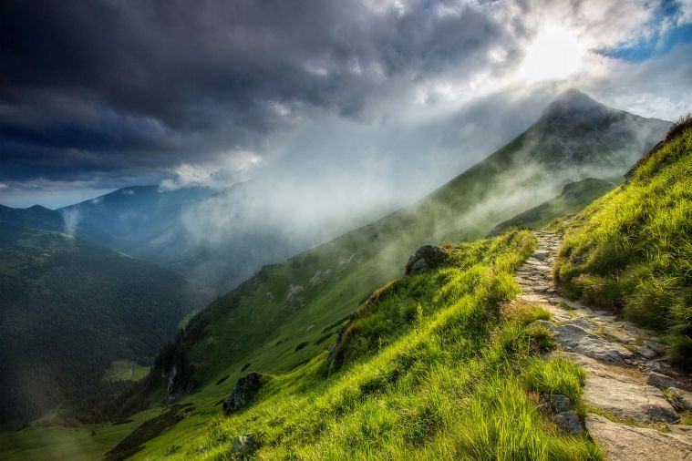Morskie Oko
Mimo że Morskie Oko to najbardziej popularne miejsce w polskich Tatrach, nie można mu odmówić urody. Zwłaszcza o wschodzie i po zmierzchu, gdy w kadr nie wchodzą tłumy turystów. Warto wybrać się tu z aparatem jesienią i latem, choć zimowy widok zamarzniętej tafli stawu i ośnieżonych szczytów z oszronionej schroniskowej szyby również robi wrażenie. Morskie Oko jest skute lodem aż przez 5 miesięcy.
Pętla spacerowa wokół Morskiego Oka liczy 2,5 km, co daje możliwość długiego spaceru w poszukiwaniu ulubionego kadru tej części Tatr.
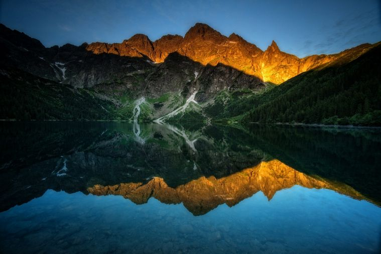 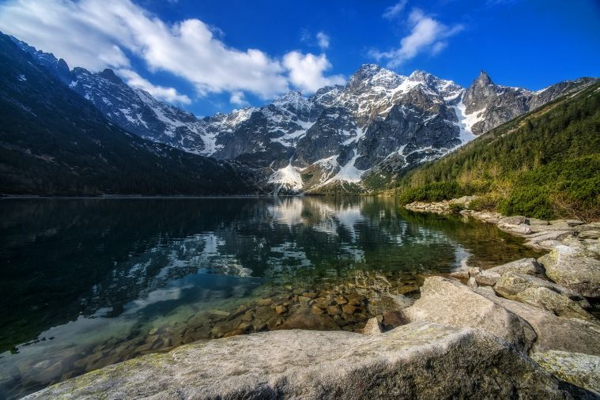Dolina Chochołowska
Pierwsza myśl? Słynne krokusy. Ale nie tylko taką – usłaną fioletem – Dolinę Chochołowską warto zapamiętać. Dolina jest stosunkowo łatwo dostępna. Właściwie w porównaniu do wypraw choćby do Pięciu Stawów, wycieczka do Chochołowskiej nie wymaga właściwie żadnego większego przygotowania sportowego. Jest tu sporo do fotografowania. Dolinę porastają lasy świerkowe. Można tu spotkać m.in. niedźwiedzie i świstaki tatrzańskie.
Warto wiedzieć, że jest to najdłuższa i największa dolina w Tatrach Zachodnich. Swoją nazwę zawdzięcza pobliskiej wsi Chochołów.
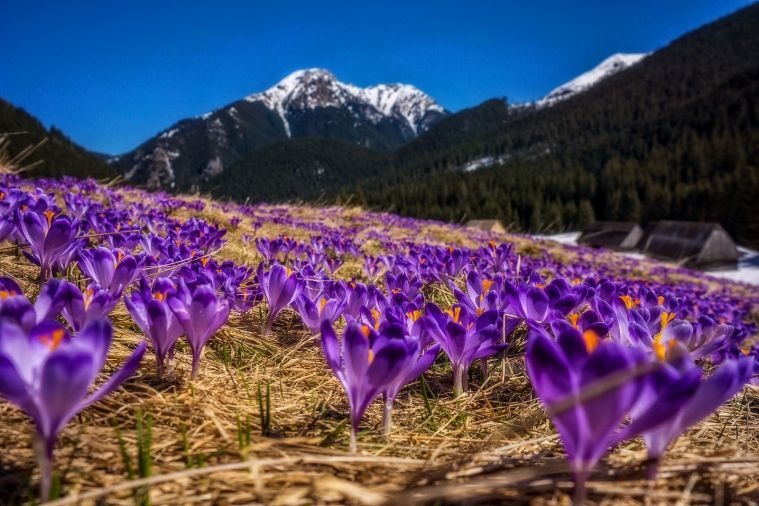 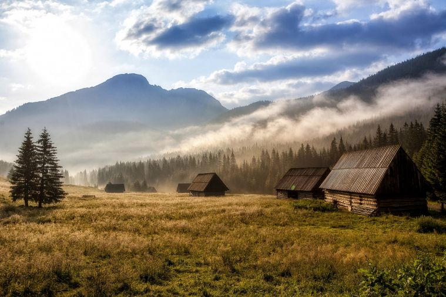 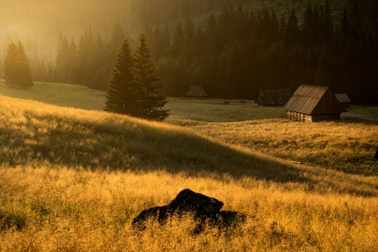Szpiglasowa Przełęcz i Szpiglasowy Wierch
Zapraszamy z aparatem w Tatry Wysokie. Przypominająca kształtem siodło Przełęcz Szpiglasowa znajduje się na wysokości 2 110 m n.p.m. Oddzielający przełęcz Szpiglasowy Wierch sięga 2 172 m n.p.m. i wzbija się na granicy polsko-słowackiej. Zarówno przełęcz, jak i szczyt gwarantują niezapomniane widoki. To stąd rozciąga się jedna z najpiękniejszych panoram na Tatry. W zasięgu wzroku są:
-
Rysy
-
Mięguszowieckie Szczyty,
-
Mnich,
-
grań Orlej Perci.
Przełęcz należy omijać zimą, kiedy występuje to duże zagrożenie lawinowe.
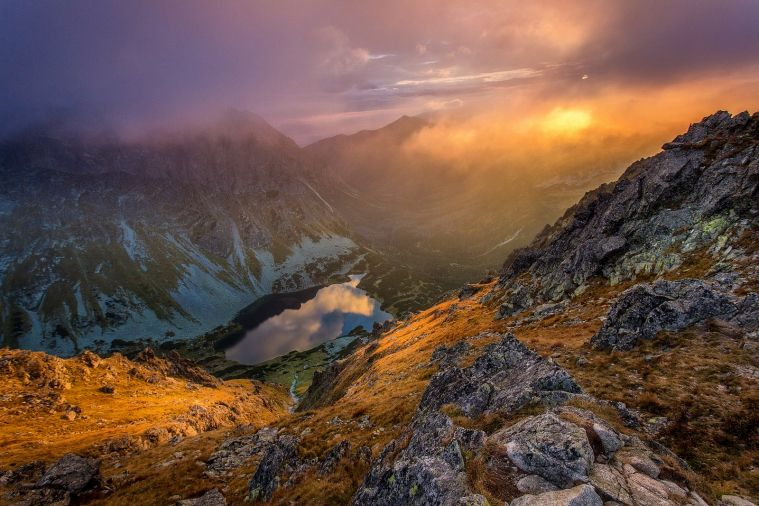 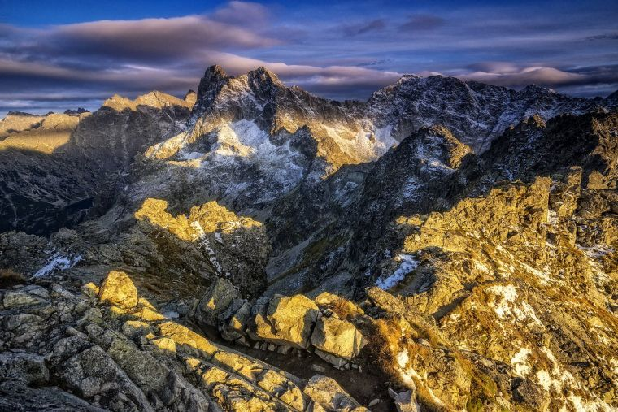Ciemniak od Doliny Kościeliskiej
To najdalej na zachód wysunięty szczyt masywu Czerwonych Wierchów. Wysokością sięga najprawdopodobniej 2 096 m. Ciemniak wznosi się ponad kilkoma dolinami: Kościeliską, Tomanową, Liptowską, Miętusią i Mułową. Dojście do dolin jest dość strome, jednak na fotografach może robić ogromne wrażenie. To tu spektakularnie opadają „Ciemniakowe" urwiska.
Pobliska Dolina Kościeliska robi za to duże wrażenie zarówno skąpana letnim słońcem, jak i pokryta nieskończonym białym puchem zimą.
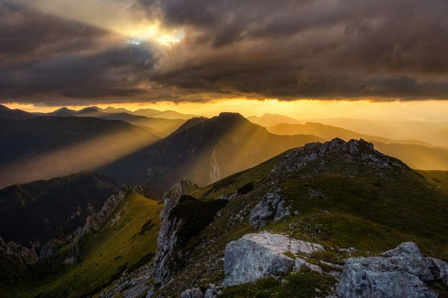 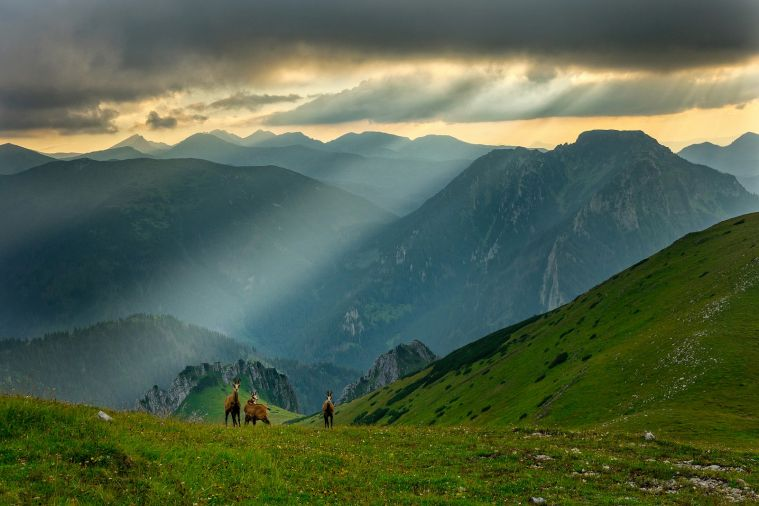